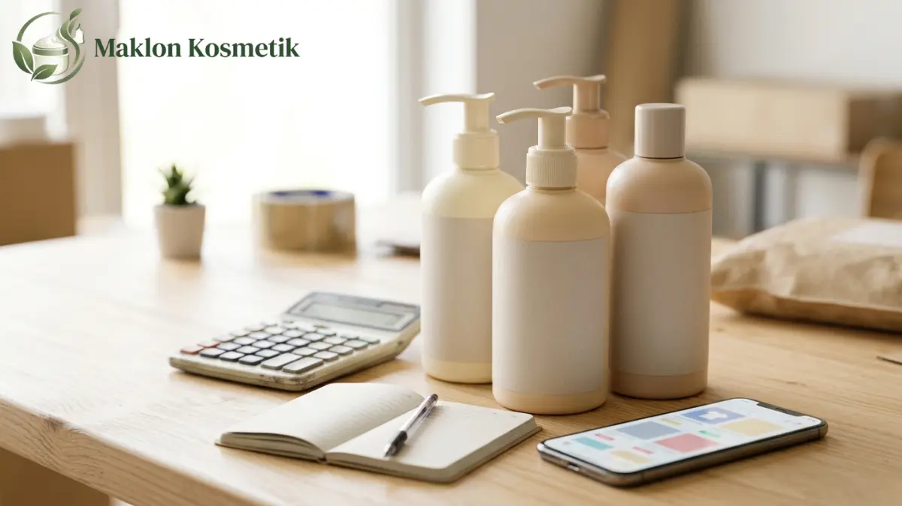
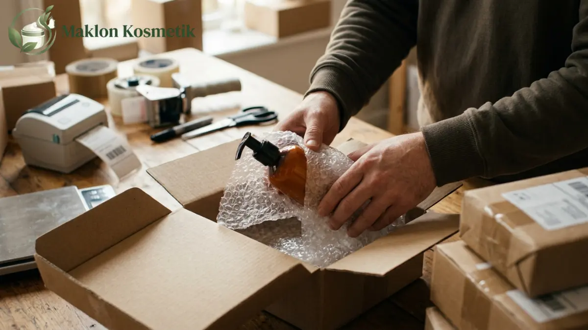

Bocoran Margin Keuntungan Penjualan Body Lotion Lokal di Marketplace

Daftar Isi Artikel Buka/Tutup
- Apa Itu Margin Kotor dan Margin Bersih pada Body Lotion?
- Berapa Biaya Admin Marketplace untuk Kategori Perawatan Diri?
- Berapa Contoh Perhitungan Margin Body Lotion Lokal?
- Biaya Apa Saja yang Sering Terlupa Penjual Body Lotion?
- Bagaimana Cara Menjaga Margin Tetap Sehat?
- Apakah Body Lotion Harus Berizin Sebelum Dijual di Marketplace?
- Apa Kesalahan Umum dalam Menghitung Margin Body Lotion?
- Pertanyaan Umum (FAQ)
Ringkasan Poin Inti
- Margin kotor produk perawatan tubuh tampak tebal, namun margin bersih tergerus signifikan setelah seluruh biaya platform.
- Platform e-commerce menerapkan komisi administrasi 9 hingga 9,5% plus biaya penanganan Rp1.250 per transaksi.
- Iklan pencarian kata kunci, voucher subsidi, dan cadangan retur botol bocor wajib dimasukkan ke simulasi HPP.
- Izin edar resmi notifikasi BPOM dan sertifikat halal wajib dimiliki agar toko terbebas dari penalti suspend.
Apa Itu Margin Kotor dan Margin Bersih pada Body Lotion?
Margin kotor adalah selisih sederhana antara harga jual eceran produk dengan Harga Pokok Penjualan (HPP) produksi dari pabrik maklon.
Sebaliknya, margin bersih adalah keuntungan riil yang benar-benar masuk ke kas bisnis setelah seluruh potongan komisi marketplace, ongkos iklan, kemasan dus, dan promo dikurangkan.
Banyak pemilik merek pemula hanya mengandalkan hitungan margin kotor di awal, sehingga terkejut mendapati kas operasional menipis saat tutup buku bulanan.
Berapa Biaya Admin Marketplace untuk Kategori Perawatan Diri?
Penyesuaian biaya administrasi marketplace per awal 2026 menetapkan komisi 9 hingga 9,5 persen untuk kelompok produk perawatan diri (personal care).
Selain komisi persentase, platform terkemuka menerapkan biaya tetap proses transaksi pesanan sebesar Rp1.250 per transaksi selesai bagi mitra penjual.
Pada kanal video belanja seperti TikTok Shop Tokopedia, skema komisi berkisar antara 2,5 hingga 10 persen dengan sistem komisi dinamis berbasis performa toko.

Berapa Contoh Perhitungan Margin Body Lotion Lokal?
Sebagai simulasi realistis, misalkan sebuah botol body lotion 250ml dijual dengan harga Rp60.000 dengan biaya HPP maklon dan kemasan botol Rp22.000.
Dari harga tersebut, dipotong biaya admin 9,5% (Rp5.700), biaya proses pesanan (Rp1.250), voucher diskon 5% (Rp3.000), dan iklan berbayar 8% (Rp4.800).
Ditambah biaya keikutsertaan gratis ongkir 2% (Rp1.200), bubble wrap kemasan (Rp1.500), serta cadangan retur barang pecah 2% (Rp1.200), total biaya mencapai Rp40.650.
Keuntungan bersih yang tersisa sebelum pajak adalah Rp19.350 atau sekitar 32 persen dari omzet kotor, bukan 63 persen sebagaimana tampak pada margin kotor awal.
"Kesehatan finansial bisnis kecantikan tidak dinilai dari seberapa besar omzet penjualan di layar dasbor toko, melainkan dari berapa rupiah laba bersih riil yang berhasil dikantongi."
Biaya Apa Saja yang Sering Terlupa Penjual Body Lotion?
Biaya yang kerap luput dari pembukuan adalah komisi affiliator kreator video, biaya endorse influencer, dan ongkos kirim retur akibat penolakan paket sistem COD.
Selain itu, lotion dalam botol berisiko mengalami rembes tutup saat pengiriman ekspedisi, sehingga penyediaan bubble wrap berkualitas tebal menjadi biaya wajib harian.
Biaya perizinan notifikasi BPOM dan sertifikat halal juga wajib diamortisasikan ke dalam setiap botol yang diproduksi agar harga pokok penjualan mencerminkan beban nyata.
Bagaimana Cara Menjaga Margin Tetap Sehat?
Terapkan strategi penetapan harga dari bawah (bottom-up pricing) dengan menjumlahkan seluruh biaya variabel sebelum menentukan harga coret promosi di etalase toko.
Manfaatkan paket bundling dua hingga tiga botol sekaligus. Strategi ini efektif mendongkrak rata-rata nilai belanja keranjang tanpa menambah biaya penanganan per pesanan.
Disiplinlah dalam membatasi rasio biaya iklan berbayar (ACOS) agar tidak melebihi 15-20 persen dari nilai penjualan yang dihasilkan per SKU produk.
Apakah Body Lotion Harus Berizin Sebelum Dijual di Marketplace?
Setiap produk kosmetik yang beredar di Indonesia wajib mengantongi nomor notifikasi BPOM resmi dan diproduksi di pabrik bersertifikat CPKB.
Selain izin BPOM, kewajiban sertifikasi halal untuk kosmetik mulai diberlakukan penuh setelah 17 Oktober 2026 berdasarkan ketetapan Peraturan Pemerintah Nomor 42 Tahun 2024.
Platform marketplace secara rutin melakukan penertiban otomatis terhadap etalase produk kosmetik tanpa izin edar, sehingga legalitas adalah benteng kelangsungan toko Anda.
Apa Kesalahan Umum dalam Menghitung Margin Body Lotion?
Kesalahan paling umum adalah mematok harga jual murah demi perang harga tanpa memperhitungkan keikutsertaan pada kampanye diskon tanggal kembar platform.
Banyak penjual juga lupa meninjau pembaruan berkala struktur komisi platform e-commerce yang kerap mengalami penyesuaian tarif setiap semester.
Ingin Maklon Body Lotion dengan HPP Kompetitif?
Dapatkan penawaran maklon body lotion berizin BPOM & Halal dengan formula premium pencerah, kemasan botol elegan, dan HPP sehat untuk bersaing di marketplace.
Pertanyaan Umum (FAQ)

Meilita
Konsultan Formulasi & Pengembangan Produk di Maklon Kosmetik ID. Berpengalaman dalam pengembangan tekstur kosmetik dekoratif, uji stabilitas, dan regulasi izin edar terstandarisasi BPOM & Halal.